SMKN 1 Banggai Laut
Jln. Bubung Batu No.1, Desa Lampa,
Kec.Banggai, Kab.Banggai Laut, Sulawesi Tengah
Senin-Jumat : 07.00-16.20
Hubungi Kami
+628 2259 51 5808
info@smkn1bnggai
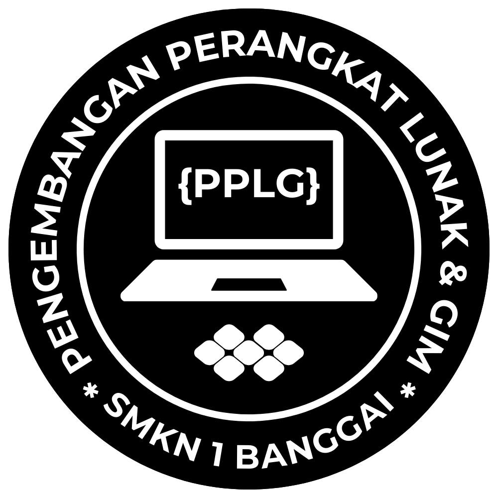
Program Keahlian Pengembangan Perangkat Lunak dan Gim (PPLG) adalah salah satu program keahlian yang mempelajari dan mendalami semua cara-cara pengembangan perangkat lunak termasuk pembuatan, pemeliharaan, manajemen organisasi pengembangan perangkat lunak dan manajemen kualitas. Selain itu, jurusan PPLG juga berhubungan dengan software komputer seperti pembuatan aplikasi, website, game dan semua yang berhubungan dengan pemrograman. Singkatnya, jurusan PPLG erat kaitannya dengan coding, desain, dan algoritma. Keunggulan dari jurusan PPLG adalah lulusannya lebih siap kerja di berbagai bidang yang membutuhkan kemampuan teknologi informasi dan komunikasi. Lulusan PPLG juga lebih paham seluk beluk komputer dan berbagai teknologi terkini. Selain itu, jurusan PPLG memiliki prospek karir yang jelas dan menjanjikan di era digital.
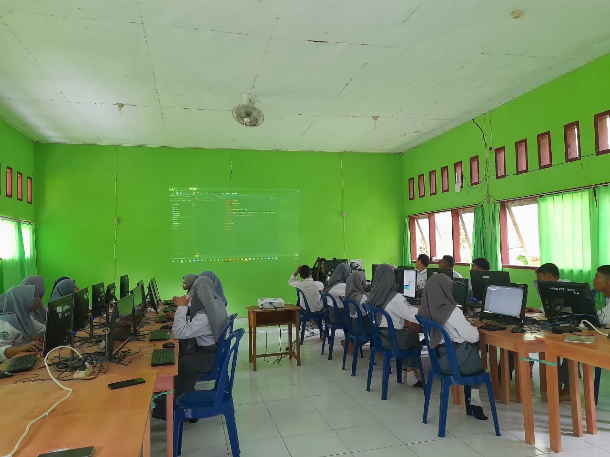
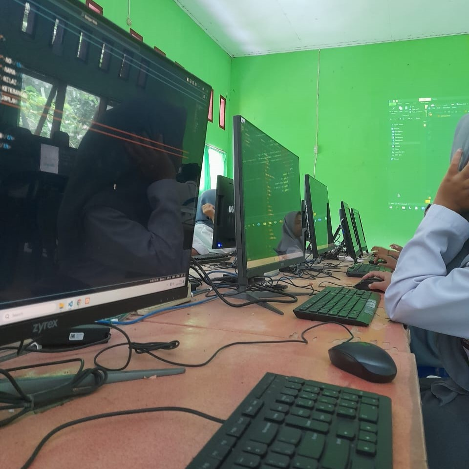
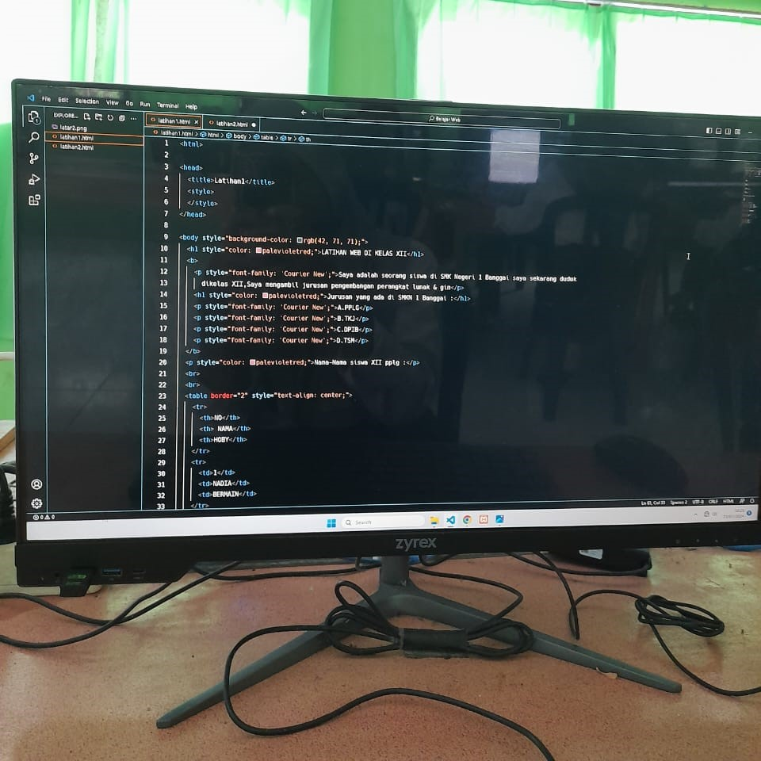
Program Keahlian Teknik Jaringan Komputer dan Telekomunikasi adalah merupakan salah satu program keahlian di yang berada di bawah bidang teknologi dan informasi. Bidang keahlian ini mempelajari tentang cara merakit, menginstal, merawat, dan memperbaiki komputer serta jaringannya. Selain itu, bidang keahlian ini juga mempelajari tentang cara menginstal, mengonfigurasi, mengoptimalkan, dan memelihara jaringan komunikasi data, baik itu jaringan lokal (LAN), jaringan luas (WAN), maupun jaringan internet. Lulusan bidang keahlian TJKT memiliki kompetensi untuk bekerja di berbagai sektor industri yang membutuhkan dukungan teknologi informasi dan komunikasi.
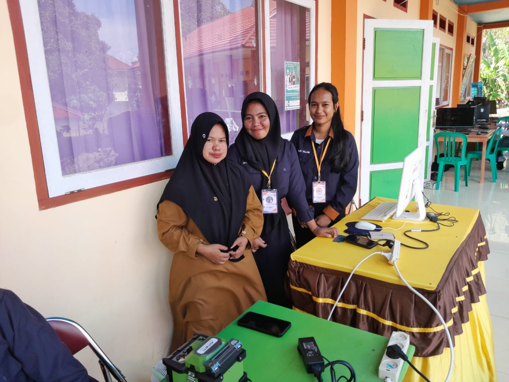
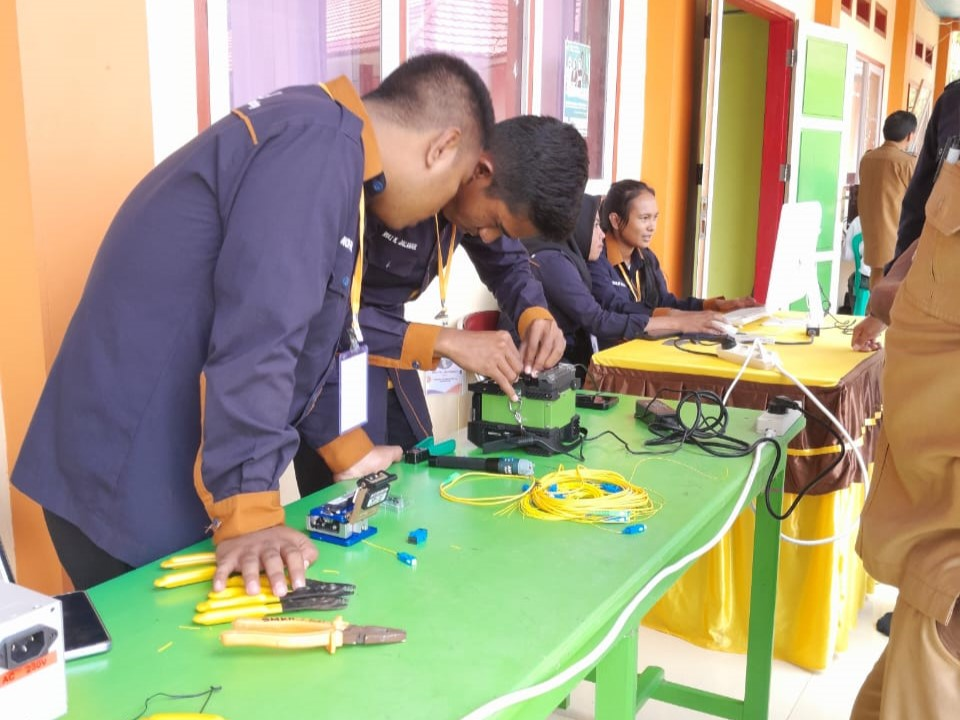
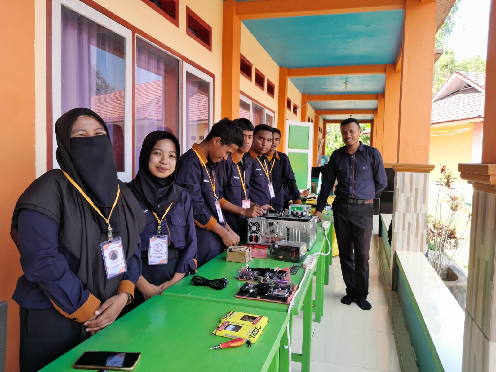
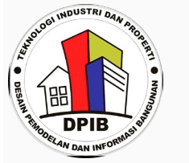
Jurusan DPIB atau Desain Permodelan dan Informasi Bangunan adalah suatu ilmu yang mempelajari tentang perencanaan pembangunan, pelaksanaan pembangunan, dan perbaikan gedung. Di jurusan ini, kamu akan belajar menggambar rumah/gedung/apartemen, menghitung biaya bangunan, melaksanakan pembangunan, serta memelihara kontruksi bangunan. Tak hanya itu saja, di jurusan ini juga kamu akan mendapatkan kompetensi keahlian aplikasi perangkat lunak, perencanaan interior gedung, estimasi biaya pembangunan, produk kreatif dan kewirausahaan, konstruksi jalan dan jembatan, konstruksi dan utilitas gedung. SMK Jurusan Desain Pemodelan dan Informasi Bangunan memiliki kurikulum yang dirancang khusus untuk mempersiapkan siswa dalam berbagai aspek desain, pemodelan, dan informasi bangunan. Mata pelajaran yang dipelajari dalam jurusan ini mencakup berbagai keterampilan yang diperlukan untuk sukses dalam industri konstruksi dan arsitektur.
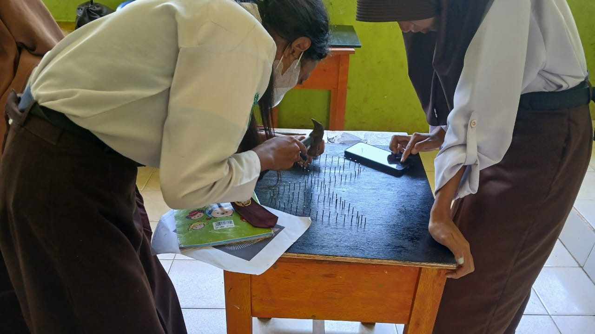
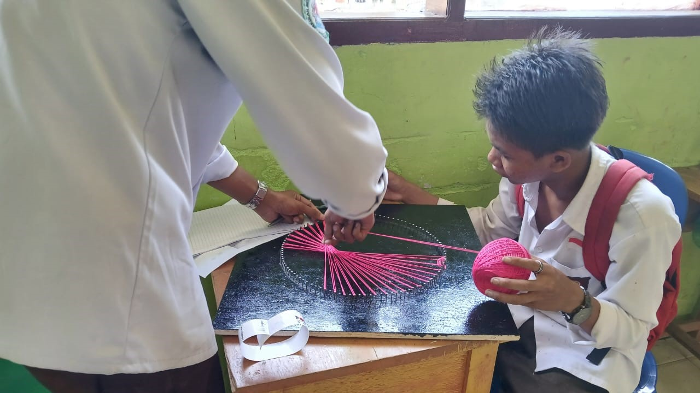
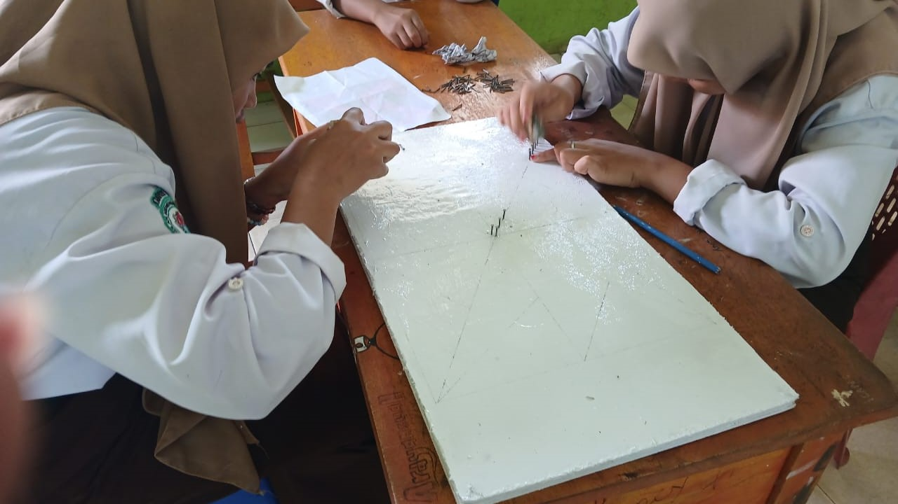
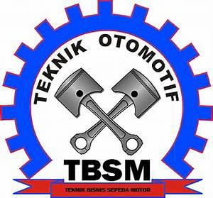
Jurusan Teknik Otomotif siap membekali siswa dengan cakupan kompetensi lulusan pengetahuan teknik otomotif (menguasai sejarah dan perkembangan teknik otomotif, dasar teknik otomotif, dan gambaran umum dunia otomotif), perawatan otomotif (menguasai teknik perawatan mesin, chasis, bodi, dan kelistrikan otomotif), teknologi Otomotif (menguasai teknik pembuatan komponen otomotif), dan enterpreneur (menguasai dasar-dasar manajemen dan pelayanan kepada konsumen serta mampu menjadi enterpreneur dalam bidang otomotif). Dalam pembelajarannya Teknik Otomotif dibagi menjadi perancangan, pengembangan, produksi, dan perawatan otomotif. Jurusan ini membekali kita dengan potensi untuk mengembangakan dan memadukan kegiatan/praktek dengan teori keteknikan. Selain itu, pada jurusan ini juga akan rutin mengadakan penelitian dan pengabdian kepada masyarakat sebagai wujud penerapan IPTEK melalui pelaksaaan pendidikan dan pengajaran serta penelitian bidang pendidikan/ketrampilan teknik bagi kepentingan pembangunan.
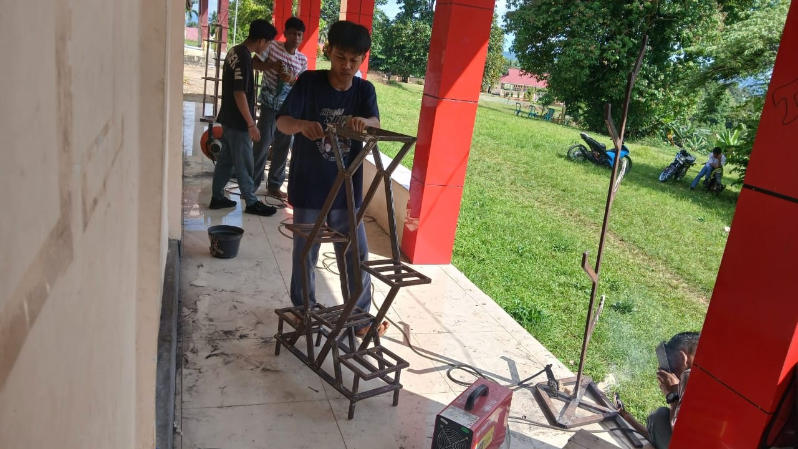
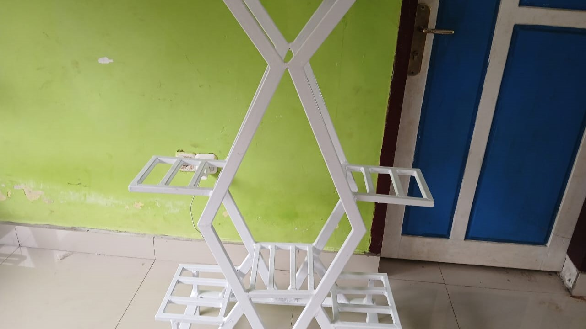
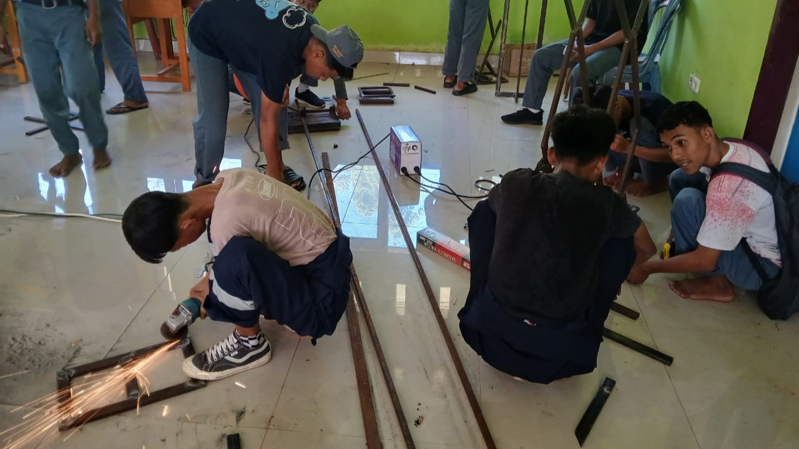
Jln. Bubung Batu No.1, Desa Lampa,
Kec.Banggai, Kab.Banggai Laut, Sulawesi Tengah
Senin-Jumat : 07.00-16.20
+628 2259 51 5808
info@smkn1bnggai